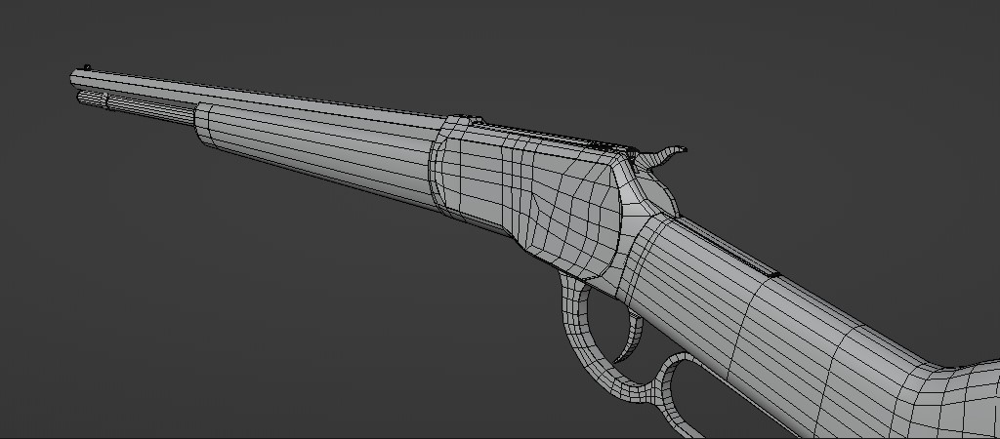
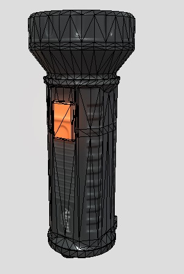
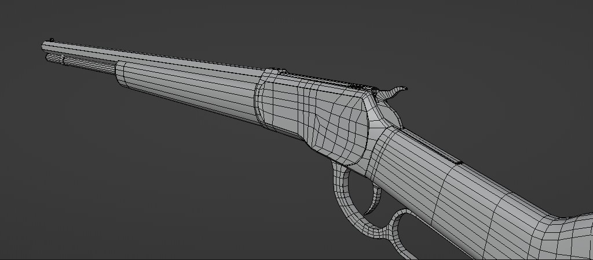
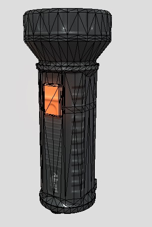

Skills
- 3d Modeling
- Programming
With my hobby of playing video games I naturally became interested in video game development 1. This was when I was in senior high, with my growing interest in the development process I naturally became interest in 3d models 2. Fortunately, my senior high had us make a project creating 3d models which introduce me to the 3d software Blender
3. With my limited skill concerning 3d modeling, I made something simple 4. I modeled a simple bow and we had it 3d printed it because it was part of the project 5. After this project however our class did not have any more projects in relation to 3d modeling 6. So I took it upon myself to study and familiarize myself to 3d modeling 7. My goal was to create something realistic 8. Unfortunately, my laptop doesn't have the specs to render something I wanted 9. So I had to tone the realism down but this doesn't mean it was a bad choice because this actually led me to find a way achieve some realism in my models even if the model is relatively low poly 10.
 



When I was in high school I didn't really know what course to choose in senior high 1. But since I was already quite interested in computers 2. I decided to choose ICT in my senior high 3. I was first introduced to the Java language 4. In terms of difficulty, I would say it was like an intermediate level, it wasn't too hard and it wasn't too easy either 5. I also like the process of creating the programs even if there are just terminal programs 6. Later on, I learned many other programming languages like C-sharp, python, and C++ 7. Because of my interest in Video Game Development, I decided to try out unity, a game engine 8. I didn't get too far in creating a game however as my laptop really had a hard time compiling even small changes in a script 9. Nonetheless, That was the first time that I was able to learn how to use frameworks and API's, while I didn't get too far with actually creating a game I did learn some programming concepts like object-oriented programming and how to use frameworks and API so, in the end, it was still learning experience. 10


Hobbies
- Video Games
- Anime and Comics/Manga
When I was a child I was already into video games 1. It was partly because my mother bought me game consoles when she came back from japan 2. The games were in Japanese but that didn't stop me from liking the games I had on my console 3. My favorite games when I was a child were Sly Cooper, GTA: San Andreas, and a 3d Pacman which I forgot the name 4. In high school, my parents gifted me and my siblings an Xbox 4. I was able to play some different genres of games than the previous one I had 5. This was also the time when I leaned much more into action games than platformers 6. In my 8th grade of high school, I discovered another genre of a game called RPG, which focuses more on character skills customization 7. I really like this genre because I was able to customize my character not just in looks and RPG can also be played in a variety of play styles which is really nice for replayability 8. I also like stealth games, stealth games are really fun when it comes to the options that the player can do to finish a mission 9. My favorite genre of games is definitely RPG then stealth games 10.
In my high school I had a friend who introduce me to anime 1. He introduce to different kinds of genres of anime 2. Watching a show that I didn't know the language was a weird experience at first 3. It took a while to get used to the characters speaking Japanese and reading the subtitles quickly because characters in anime just speaks a lot4. Of course there was also the option of watching its english dub which I can easily understand, I prefer it when the show I am watching is on its original language because for some reason it always sound weird when it isn't dub in it's original language 5. Naturally liking anime I stumbled upon Japanese comics 6. Much like anime's I also enjoyed reading the comics 7. I think the art styles in a Japanese comic is very interesting 8. There are realistic styles and some goofy styles which is more comedy 9. Overall I really like the style and animation of manga and anime 10.
Interest
- Video Game Development
- 3d Animation
I really like playing video games and even had some ideas on game mechanics or setting of a game 1. This interest led me to try out unity 2. Unfortunately, my laptop did not have the best specs when it comes to rendering graphics 3. While my goal to create a game was unsuccessful I did learn a lot about programming so in the end I am still glad I decided to try it out 4. If I can't make a full game I decided to try out making more game-ready models 5. Since I already had a prior experience in 3d modeling this increased my skill in 3d modeling 6. Since then I have been continuing to do 3d models. 7. Albeit very slow because I had to stop modeling a bit to focus on college 8. But Nonetheless, whenever I have time I make or continue my 3d projects 9. For now I guess I will just continue creating 3d models and I guess save up money for a better computer 10.
Much like 3d modeling 1. I became interested in 3d animation because of my interest in game development 2. Animation wasn't really my strong suite 3. Learning animation is very different in modeling 4. Different in the sense of references 5. Unlike modeling, animation captures the movement6. A movement can be simple but can be actually complex to make it look realistic 7. In modeling the model only captures the still object8. The only thing making modeling complex is the details, the roughness, the color, the wear and tear, etc. or just go for a cartoonish style and it can still look good 9. Comparing both of them I think modeling is much easier 10.